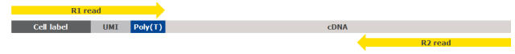

BD Rhapsody™ sequencing analysis
This chapter provides in-depth information on the process, output metrics and interpretation of output from BD Rhapsody™ sequencing analysis:
| Section | Information |
|---|---|
| BD Rhapsody™ sequencing analysis | Detailed description of each step in the BD Rhapsody™ pipeline |
| Reviewing sequencing analysis output files | Definitions of the sequencing analysis output metrics |
| Interpreting output metrics | Recomended solutions to possible problems during sequencing analysis |
Understanding the BD Rhapsody™ Analysis pipeline step-by-step
Introduction
This section provides an in-depth description of each step in the BD Rhapsody™ Analysis pipelines. For instructions on running the pipeline, see the BD® Single-Cell Multiomics Analysis Setup User Guide (23-21333). Single-Cell Multiomics technical publications are available for download from the BD® Single-Cell Multiomics Resource Library at https://scomix.bd.com/hc/en-us/categories/360000838932-Resource-Library. We recommend analyzing datasets that are < 100 GB in size. For datasets (compressed FASTQ FILES from all libraries) >100 GB, contact BD Biosciences technical support at scomix@bdscomix.bd.com.
Overview
The BD Rhapsody™ assays are used to create sequencing libraries from single-cell multiomic experiments. The analysis pipeline works with paired-end FASTQ R1 and R2 files. R1 reads contain information on the cell label and molecular identifier, and R2 reads contain information on the bioproduct. See Figure 1.
